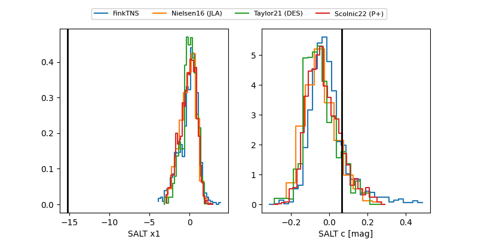

FINK: ZTF25abqgyfw
Lasair: ZTF25abqgyfw
ALeRCE: ZTF25abqgyfw
ZTF25abqgyfw (ztf,fink)
equatorial (ra, dec) = (271.6114,+10.25618)
galactic (l, b) = (37.1358,+14.59665)

last ztfr=19.88
2 ztfr detections